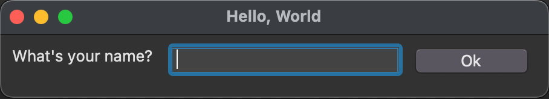

GUITk Tutorial
Overview of the GUITk Library
GUITk is a declarative framework, built on tkinter, for building nice-looking, cross-platform GUIs in Python. The goal of GUITk is to make it easy to build GUIs without knowing a lot about tkinter. The GUITk object model is partially inspired by SwiftUI.
GUITk wraps tkinter widgets in GUITk objects. Instead of the standard tkinter geometry managers (pack, grid, place), GUITk uses declarative layout objects to place widgets in a window. GUITk also provides a declarative
Why tkinter?
GUITk builds on tkinter because tkinter is a mature, stable, cross-platform GUI framework that is included in the Python standard library. tkinter was first added to Python 1.4 in 1996 and runs on most platforms. It is not, however, the easiest to use nor the most pythonic GUI framework. GUITk aims to make it easier to build GUIs with tkinter. Standard tkinter widgets look somewhat dated but tkinter includes themed widgets (ttk) that look much better. GUITk uses ttk widgets whenever possible.
Basic Concepts
Let's start with an example. The following "hello world" example creates a window with a label, a text entry box, and a button. When the user presses Return or clicks the button, a greeting is printed to the console.

"""Simple Hello World example using guitk """
import guitk as ui
# subclass guitk.Window as the starting point for your app's main window
class HelloWindow(ui.Window):
def config(self):
"""Configure the window"""
# set the window title
self.title = "Hello, World"
# define a layout for the window
# the layout manager will automatically add widgets to the window
with ui.HLayout():
ui.Label("What's your name?")
ui.Entry(key="name", focus=True)
ui.Button("Ok", key="ok")
@ui.on(key="ok")
def on_ok(self, event: ui.Event):
"""Handle the Ok button click"""
print("Hello, ", self.get("name").value)
# run your event loop
if __name__ == "__main__":
HelloWindow().run()
A few things to note about this example:
- The
HelloWindowclass subclassesguitk.Window. This is the starting point for your app's main window. - The
HelloWindowclass defines aconfigmethod that configures the window.config()is a special method that is called by GUITk before the window is created. It is used to configure the window's title, size, and widgets. Your window class must define aconfig()method. - Widgets are added to your window using a layout manager. Creating an instance of a layout manager within your
config()method adds it to the window. TheHelloWindowclass uses anHLayout()layout manager which arranges widgets horizontally. - Widgets, such as
Label(static text),Entry(text entry box), andButton, are added to the window by creating instances of them within the context of the layout manager. - Every widget has an optional key, which is a unique identifier for the widget. In this example, the "Ok" button has a key of "ok".
- Events (such as a button press) are handled using the
@on()decorator. The@on()decorator is used to register a callback function that is called when the event occurs. In this example, theon_ok()function is called when the user presses Return or clicks the "Ok" button (because the button has a key of "ok" which theon_ok()function is registered to handle).
Creating a Window
Every GUITk app must have at least one class that subclasses guitk.Window. This class is the starting point
for your app's main window. An app may have multiple windows but one of them must be the main window. The main
window is created by calling the run() method on the window class. The run() method starts the main event
loop and displays the window.
The Window class has a config() method that is called by GUITk before the window is created. You must define
a config() method in your window class in order to display any widgets in the window (and without widgets, your
window would be a pretty boring GUI). The config method will be automatically called by GUITk before the window
is displayed. You should not need to create an __init__() method in your window class as all configuration
is done in the config() method.
Here is a minimal window class:

"""Minimal example of a GUITk Window"""
import guitk as ui
class MinimalWindow(ui.Window):
def config(self):
with ui.VLayout():
ui.Label("Hello World!")
if __name__ == "__main__":
MinimalWindow().run()
Window Configuration
The config() method is used to configure the window. When subclassing guitk.Window, you must define a config() method.
You do not need to call the config() method yourself nor should you call the superclass config() method. GUITk will call
config() for you before the window is created.
In config(), you can set the title and size of the window and create your layout by creating an instance of GUITk Layout Manager.
For example, here is a window with a title and size:
class MyWindow(guitk.Window):
def config(self):
self.title = "My Window"
self.size = (400, 300)
Window size (in pixels) can be set as a tuple of (width, height) or as a string in the form "widthxheight" (e.g. "400x300").
Consistent with tkinter, the window size can also be set by setting self.geometry:
class MyWindow(guitk.Window):
def config(self):
self.title = "My Window"
self.geometry = "400x300"
Layouts are covered in more detail in the next section.
Window Methods
In addition to the config() method, you can define the following methods in your window class and if defined, they will be called by GUITk:
setup(self) -> None - called after the window is created (after config()) but before it is displayed. This is a good place to initialize your app's state.
If you need to access any of the underlying tkinter widgets, you can do so in setup() as the widgets will have been created by this point.
teardown(self) -> None - called when the window is closed. This is a good place to clean up any resources used by your app.
handle_event(self, event: guitk.Event) -> None - called when an event occurs. This is a good place to handle events that are not handled by widgets or by the @on() decorator.
The GUITk event system is covered in more detail in a later section.
Here's an example of a window with a title and size and the setup(), teardown(), and handle_event() methods defined:
"""Hello World example using guitk """
import guitk as ui
class HelloWorld(ui.Window):
# subclass guitk.Window as the starting point for your app's main window
def config(self):
# Your Window class needs to define a config() method that describes the layout, title, etc for your app
# config() is called by the Window class when the Window is being created
# Title for the window
self.title = "Hello, World"
# optionally set size as a tuple of (width, height)
self.size = (320, 240)
# you can also use self.geometry for consistency with tkinter
# self.geometry = "320x240"
# Define the window's contents
# guitk.Label corresponds to a tkinter.ttk.Label, etc.
# optionally provide a unique key to each element to easily reference the element later
# use a HLayout or VLayout class to define the layout of the window
# HLayout arranges widgets horizontally, VLayout arranges widgets vertically
with ui.VLayout():
# use a VLayout to stack the widgets vertically
# standard tkinter layout options such as sticky and weight are supported
ui.Label("What's your name?", sticky="ew", anchor="center", weightx=1)
# each widget can be assigned a key, which should be unique, to easily reference the widget later
# set focus=True so the Entry box has focus when the window is displayed
ui.Entry(key="entry_name", focus=True, weightx=1, sticky="ew")
ui.Label("", width=40, key="output")
with ui.HStack():
# align these two buttons in a horizontal row using HStack
ui.Button("Ok")
ui.Button("Quit")
# Every Window class has 3 special methods that can be overridden to provide custom behavior
# you do not need to provide any of these methods if you do not need to customize the default behavior
# (the default behavior is to do nothing)
# These special methods are: setup(), teardown(), and handle_event()
def setup(self):
"""Perform any initialization needed before the Window is displayed"""
# your setup() method is called by the Window class after config() just before the Window is displayed
# use this to initialize any internal state you need
# you do not need to provide a setup() method if no initialization is needed
print("setup")
def teardown(self):
"""Perform any cleanup needed before destroying the window"""
# your teardown() method is called by the Window class after the Window is closed
# use this to clean up before the Window is destroyed
# you do not need to provide a teardown() method if no cleanup is needed
print("teardown")
def handle_event(self, event: ui.Event):
"""handle_event() is called by the Window class when an event occurs"""
# you do not need to provide a handle_event() method if you prefer to use
# the @on decorator to bind functions to events (see below)
# handle_event() is a useful place to put code that needs to run for every event
# or for use during debugging
print(f"handle_event: {event}")
@ui.on(key="Quit")
def on_quit(self):
# return the value of the Entry box
self.quit(self["entry_name"].value)
@ui.on(key="Ok")
@ui.on(event_type=ui.EventType.EntryReturn)
def on_ok(self):
# User pressed the OK button or the Return key inside the Entry box
# the @on decorator can be used to bind a function to an event
# @on can be repeated to bind the function to multiple events
# set the output Label to the value of the Entry box
# individual widgets can be accessed by their key; the window object acts as a dictionary of widgets
greeting = f"Hello {self['entry_name'].value}! Thanks for trying guitk."
# if you prefer, you can use get() instead of the dictionary syntax
self.get("output").value = greeting
if __name__ == "__main__":
# instantiate your Window class and run it
name = HelloWorld().run()
print(f"Hello {name}")
Starting the App
Once you have defined your window class, you can start the app by calling the run() method on the window class:
MyWindow.run()
This creates the window and starts the tkinter event loop. The run() method does not return until the window is closed.
Child windows may be created in your class by creating an instance of a window class, for example, child = MyChildWindow(), but you
should call run() only on the main window.
Layouts
Events
TODO: finish tutorial
This tutorial is a work in progress. More to come soon...